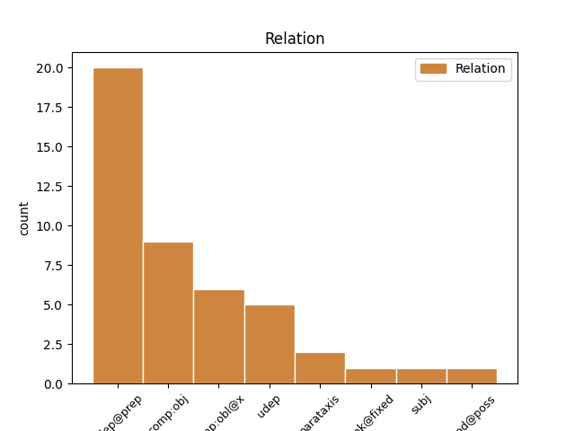
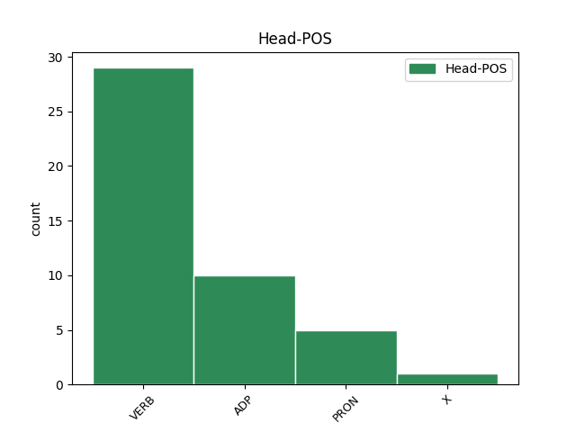
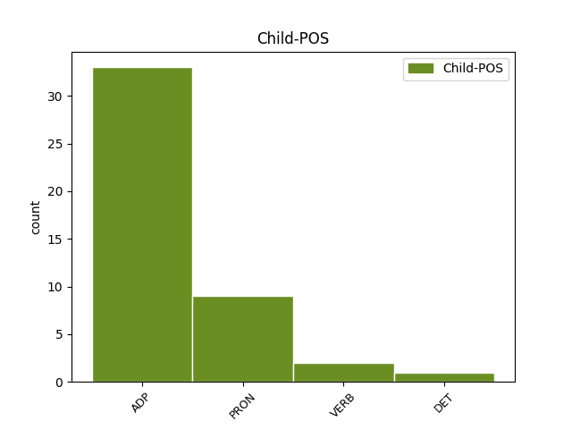

Distribution of features within this leaf



Agreement Rules sorted by frequency.
- When the dependent token is the underspecified dependency(udep@prep) of the head token, and the head token is ADP
1 Bhuail _ _ _ _ 0 _ _ _
2 sí _ _ _ _ 0 _ _ _
3 léi _ _ _ _ 0 _ _ _
4 ina _ _ _ _ 0 _ _ _
5 dhiaidh _ _ _ _ 0 _ _ _
6 sin _ _ _ _ 0 _ _ _
7 , _ _ _ _ 0 _ _ _
8 í _ _ _ _ 0 _ _ _
9 ag _ _ _ _ 0 _ _ _
10 féachaint _ _ _ _ 0 _ _ _
11 anonn _ _ _ _ 0 _ _ _
12 ar _ _ _ _ 0 _ _ _
13 bhalla _ _ _ _ 0 _ _ _
14 leathan _ _ _ _ 0 _ _ _
15 lom _ _ _ _ 0 _ _ _
16 , _ _ _ _ 0 _ _ _
17 a _ _ _ _ 0 _ _ _
18 méar _ _ _ _ 0 _ _ _
19 curtha _ _ _ _ 0 _ _ _
20 go _ _ _ _ 0 _ _ _
21 héadrom _ _ _ _ 0 _ _ _
22 lena _ _ _ _ 0 _ _ _
23 béal _ _ _ _ 0 _ _ _
24 , _ _ _ _ 0 _ _ _
25 agus _ _ _ _ 0 _ _ _
26 na _ _ _ _ 0 _ _ _
27 híomhánna _ _ _ _ 0 _ _ _
28 á _ _ _ _ 0 _ _ _
29 nginiuint _ _ _ _ 0 _ _ _
30 ina _ _ _ _ 0 _ _ _
31 hintinn _ _ _ _ 0 _ _ _
32 istigh _ _ _ _ 0 _ _ _
33 : _ _ _ _ 0 _ _ _
34 na _ _ _ _ 0 _ _ _
35 Tiotáin _ _ _ _ 0 _ _ _
36 á _ _ _ _ 0 _ _ _
37 mbrú _ _ _ _ 0 _ _ _
38 ag _ _ _ _ 0 _ _ _
39 maidhm _ _ _ _ 0 _ _ _
40 charraigeacha _ _ _ _ 0 _ _ _
41 , _ _ _ _ 0 _ _ _
42 díoltas _ _ _ _ 0 _ _ _
43 na _ _ _ _ 0 _ _ _
44 ndéithe _ _ _ _ 0 _ _ _
45 á do ADP Poss Number=Plur|Person=3|Poss=Yes|PronType=Prs 0 _ _ _
46 agairt _ _ _ _ 0 _ _ _
47 orthu ar ADP Prep Number=Plur|Person=3 45 udep@prep _ _
48 anuas _ _ _ _ 0 _ _ _
49 . _ _ _ _ 0 _ _ _
1 Na _ _ _ _ 0 _ _ _
2 himreoirí _ _ _ _ 0 _ _ _
3 ar _ _ _ _ 0 _ _ _
4 fad _ _ _ _ 0 _ _ _
5 suite _ _ _ _ 0 _ _ _
6 istigh _ _ _ _ 0 _ _ _
7 i _ _ _ _ 0 _ _ _
8 seomra _ _ _ _ 0 _ _ _
9 feistis _ _ _ _ 0 _ _ _
10 agus _ _ _ _ 0 _ _ _
11 iad iad PRON Pers Number=Plur|Person=3 0 _ _ _
12 á do ADP Poss Number=Plur|Person=3|Poss=Yes|PronType=Prs 11 comp:obl@x _ _
13 ngléasadh _ _ _ _ 0 _ _ _
14 féin _ _ _ _ 0 _ _ _
15 don _ _ _ _ 0 _ _ _
16 chluiche _ _ _ _ 0 _ _ _
17 . _ _ _ _ 0 _ _ _
1 Imím imigh VERB VI Mood=Ind|Number=Sing|Person=1|Tense=Pres 0 _ _ _
2 liom le ADP Prep Number=Sing|Person=1 1 udep@prep _ _
3 soir _ _ _ _ 0 _ _ _
4 Ar _ _ _ _ 0 _ _ _
5 thóir _ _ _ _ 0 _ _ _
6 an _ _ _ _ 0 _ _ _
7 phictiúir _ _ _ _ 0 _ _ _
8 . _ _ _ _ 0 _ _ _
1 Bhí _ _ _ _ 0 _ _ _
2 coicís _ _ _ _ 0 _ _ _
3 ann _ _ _ _ 0 _ _ _
4 anois _ _ _ _ 0 _ _ _
5 ó _ _ _ _ 0 _ _ _
6 tháinig _ _ _ _ 0 _ _ _
7 siad _ _ _ _ 0 _ _ _
8 , _ _ _ _ 0 _ _ _
9 agus _ _ _ _ 0 _ _ _
10 dá _ _ _ _ 0 _ _ _
11 fhad _ _ _ _ 0 _ _ _
12 dá _ _ _ _ 0 _ _ _
13 mbeidís bí VERB Cond Form=Ecl|Mood=Cnd|Number=Plur|Person=3 0 _ _ _
14 ann i ADP Prep Gender=Masc|Number=Sing|Person=3 13 comp:obl@x _ _
15 is _ _ _ _ 0 _ _ _
16 ea _ _ _ _ 0 _ _ _
17 ba _ _ _ _ 0 _ _ _
18 chontúirtí _ _ _ _ 0 _ _ _
19 dóibh _ _ _ _ 0 _ _ _
20 é _ _ _ _ 0 _ _ _
21 . _ _ _ _ 0 _ _ _
1 Tuigfear _ _ _ _ 0 _ _ _
2 mar _ _ _ _ 0 _ _ _
3 sin _ _ _ _ 0 _ _ _
4 , _ _ _ _ 0 _ _ _
5 de _ _ _ _ 0 _ _ _
6 bharr _ _ _ _ 0 _ _ _
7 tóir _ _ _ _ 0 _ _ _
8 a _ _ _ _ 0 _ _ _
9 bheith _ _ _ _ 0 _ _ _
10 agam _ _ _ _ 0 _ _ _
11 ar _ _ _ _ 0 _ _ _
12 bhealaí _ _ _ _ 0 _ _ _
13 nádúrtha _ _ _ _ 0 _ _ _
14 leis _ _ _ _ 0 _ _ _
15 an _ _ _ _ 0 _ _ _
16 gcorp _ _ _ _ 0 _ _ _
17 a _ _ _ _ 0 _ _ _
18 thabhairt _ _ _ _ 0 _ _ _
19 chun _ _ _ _ 0 _ _ _
20 lánfoirfeachta _ _ _ _ 0 _ _ _
21 gur _ _ _ _ 0 _ _ _
22 chuireas cuir X CM Dialect=Munster|Form=Len|Mood=Ind|Number=Sing|Person=1|Tense=Past 0 _ _ _
23 cluas _ _ _ _ 0 _ _ _
24 le _ _ _ _ 0 _ _ _
25 héisteacht _ _ _ _ 0 _ _ _
26 orm ar ADP Prep Number=Sing|Person=1 22 udep@prep _ _
27 féin _ _ _ _ 0 _ _ _
28 san _ _ _ _ 0 _ _ _
29 Horseman's _ _ _ _ 0 _ _ _
30 Inn _ _ _ _ 0 _ _ _
31 i _ _ _ _ 0 _ _ _
32 mBéal _ _ _ _ 0 _ _ _
33 na _ _ _ _ 0 _ _ _
34 Coire _ _ _ _ 0 _ _ _
35 Thoir _ _ _ _ 0 _ _ _
36 nuair _ _ _ _ 0 _ _ _
37 a _ _ _ _ 0 _ _ _
38 thosaigh _ _ _ _ 0 _ _ _
39 na _ _ _ _ 0 _ _ _
40 dúchasaigh _ _ _ _ 0 _ _ _
41 , _ _ _ _ 0 _ _ _
42 ar _ _ _ _ 0 _ _ _
43 cheannaíos _ _ _ _ 0 _ _ _
44 deoch _ _ _ _ 0 _ _ _
45 nó _ _ _ _ 0 _ _ _
46 dhó _ _ _ _ 0 _ _ _
47 dóibh _ _ _ _ 0 _ _ _
48 i _ _ _ _ 0 _ _ _
49 rith _ _ _ _ 0 _ _ _
50 na _ _ _ _ 0 _ _ _
51 hoíche _ _ _ _ 0 _ _ _
52 , _ _ _ _ 0 _ _ _
53 ag _ _ _ _ 0 _ _ _
54 caint _ _ _ _ 0 _ _ _
55 go _ _ _ _ 0 _ _ _
56 leathmhagúil _ _ _ _ 0 _ _ _
57 ar _ _ _ _ 0 _ _ _
58 thuras _ _ _ _ 0 _ _ _
59 leighis _ _ _ _ 0 _ _ _
60 ag _ _ _ _ 0 _ _ _
61 Nettle's _ _ _ _ 0 _ _ _
62 Cottage _ _ _ _ 0 _ _ _
63 . _ _ _ _ 0 _ _ _
1 Ón _ _ _ _ 0 _ _ _
2 Bhaváir _ _ _ _ 0 _ _ _
3 cuireadh _ _ _ _ 0 _ _ _
4 ar _ _ _ _ 0 _ _ _
5 aghaidh _ _ _ _ 0 _ _ _
6 go _ _ _ _ 0 _ _ _
7 Beirlin _ _ _ _ 0 _ _ _
8 é é PRON Pers Gender=Masc|Number=Sing|Person=3 0 _ _ _
9 ina i ADP Poss Gender=Masc|Number=Sing|Person=3|Poss=Yes 8 udep _ _
10 nuinteas _ _ _ _ 0 _ _ _
11 chun _ _ _ _ 0 _ _ _
12 na _ _ _ _ 0 _ _ _
13 Gearmáine _ _ _ _ 0 _ _ _
14 ar _ _ _ _ 0 _ _ _
15 22 _ _ _ _ 0 _ _ _
16 Meitheamh _ _ _ _ 0 _ _ _
17 1920 _ _ _ _ 0 _ _ _
18 , _ _ _ _ 0 _ _ _
19 áit _ _ _ _ 0 _ _ _
20 a _ _ _ _ 0 _ _ _
21 raibh _ _ _ _ 0 _ _ _
22 sé _ _ _ _ 0 _ _ _
23 , _ _ _ _ 0 _ _ _
24 mar _ _ _ _ 0 _ _ _
25 ba _ _ _ _ 0 _ _ _
26 nós _ _ _ _ 0 _ _ _
27 , _ _ _ _ 0 _ _ _
28 ina _ _ _ _ 0 _ _ _
29 dhéan _ _ _ _ 0 _ _ _
30 ar _ _ _ _ 0 _ _ _
31 an _ _ _ _ 0 _ _ _
32 corps _ _ _ _ 0 _ _ _
33 taidhleoireachta _ _ _ _ 0 _ _ _
34 ar _ _ _ _ 0 _ _ _
35 fad _ _ _ _ 0 _ _ _
36 . _ _ _ _ 0 _ _ _
1 (4) _ _ _ _ 0 _ _ _
2 Breithneoidh _ _ _ _ 0 _ _ _
3 an _ _ _ _ 0 _ _ _
4 Ard-Chomhairle _ _ _ _ 0 _ _ _
5 gach _ _ _ _ 0 _ _ _
6 aithris _ _ _ _ 0 _ _ _
7 chúise _ _ _ _ 0 _ _ _
8 agus _ _ _ _ 0 _ _ _
9 na _ _ _ _ 0 _ _ _
10 nótaí _ _ _ _ 0 _ _ _
11 ( _ _ _ _ 0 _ _ _
12 más _ _ _ _ 0 _ _ _
13 ann i ADP Prep Gender=Masc|Number=Sing|Person=3 0 _ _ _
14 dóibh do ADP Prep Number=Plur|Person=3 13 unk@fixed _ SpaceAfter=No
15 ) _ _ _ _ 0 _ _ _
16 ina _ _ _ _ 0 _ _ _
17 taobh _ _ _ _ 0 _ _ _
18 a _ _ _ _ 0 _ _ _
19 leagfar _ _ _ _ 0 _ _ _
20 fé _ _ _ _ 0 _ _ _
21 n-a _ _ _ _ 0 _ _ _
22 bráid _ _ _ _ 0 _ _ _
23 fén _ _ _ _ 0 _ _ _
24 alt _ _ _ _ 0 _ _ _
25 so _ _ _ _ 0 _ _ _
26 agus _ _ _ _ 0 _ _ _
27 más _ _ _ _ 0 _ _ _
28 deimhin _ _ _ _ 0 _ _ _
29 léi _ _ _ _ 0 _ _ _
30 tar _ _ _ _ 0 _ _ _
31 éis _ _ _ _ 0 _ _ _
32 an _ _ _ _ 0 _ _ _
33 bhreithnithe _ _ _ _ 0 _ _ _
34 sin _ _ _ _ 0 _ _ _
35 go _ _ _ _ 0 _ _ _
36 bhfuil _ _ _ _ 0 _ _ _
37 an _ _ _ _ 0 _ _ _
38 cúrsa _ _ _ _ 0 _ _ _
39 stuidéir _ _ _ _ 0 _ _ _
40 agus _ _ _ _ 0 _ _ _
41 na _ _ _ _ 0 _ _ _
42 scrúduithe _ _ _ _ 0 _ _ _
43 le _ _ _ _ 0 _ _ _
44 n-a _ _ _ _ 0 _ _ _
45 mbaineann _ _ _ _ 0 _ _ _
46 an _ _ _ _ 0 _ _ _
47 aithris _ _ _ _ 0 _ _ _
48 chúise _ _ _ _ 0 _ _ _
49 sin _ _ _ _ 0 _ _ _
50 gan _ _ _ _ 0 _ _ _
51 bheith _ _ _ _ 0 _ _ _
52 de _ _ _ _ 0 _ _ _
53 shaghas _ _ _ _ 0 _ _ _
54 a _ _ _ _ 0 _ _ _
55 chuireann _ _ _ _ 0 _ _ _
56 in _ _ _ _ 0 _ _ _
57 áirithe _ _ _ _ 0 _ _ _
58 go _ _ _ _ 0 _ _ _
59 mbeidh _ _ _ _ 0 _ _ _
60 ag _ _ _ _ 0 _ _ _
61 daoine _ _ _ _ 0 _ _ _
62 , _ _ _ _ 0 _ _ _
63 a _ _ _ _ 0 _ _ _
64 gheobhaidh _ _ _ _ 0 _ _ _
65 teisteas _ _ _ _ 0 _ _ _
66 tástála _ _ _ _ 0 _ _ _
67 ón _ _ _ _ 0 _ _ _
68 gcoláiste _ _ _ _ 0 _ _ _
69 no _ _ _ _ 0 _ _ _
70 ón _ _ _ _ 0 _ _ _
71 gcólucht _ _ _ _ 0 _ _ _
72 a _ _ _ _ 0 _ _ _
73 cheangalann _ _ _ _ 0 _ _ _
74 ar _ _ _ _ 0 _ _ _
75 dhaoine _ _ _ _ 0 _ _ _
76 an _ _ _ _ 0 _ _ _
77 cúrsa _ _ _ _ 0 _ _ _
78 stuidéir _ _ _ _ 0 _ _ _
79 agus _ _ _ _ 0 _ _ _
80 na _ _ _ _ 0 _ _ _
81 scrúduithe _ _ _ _ 0 _ _ _
82 sin _ _ _ _ 0 _ _ _
83 do _ _ _ _ 0 _ _ _
84 chur _ _ _ _ 0 _ _ _
85 díobh _ _ _ _ 0 _ _ _
86 , _ _ _ _ 0 _ _ _
87 an _ _ _ _ 0 _ _ _
88 oilteacht _ _ _ _ 0 _ _ _
89 agus _ _ _ _ 0 _ _ _
90 an _ _ _ _ 0 _ _ _
91 t-eolas _ _ _ _ 0 _ _ _
92 is _ _ _ _ 0 _ _ _
93 gá _ _ _ _ 0 _ _ _
94 chun _ _ _ _ 0 _ _ _
95 a _ _ _ _ 0 _ _ _
96 ngairm _ _ _ _ 0 _ _ _
97 do _ _ _ _ 0 _ _ _
98 chleachta _ _ _ _ 0 _ _ _
99 go _ _ _ _ 0 _ _ _
100 héifeachtúil _ _ _ _ 0 _ _ _
101 , _ _ _ _ 0 _ _ _
102 féadfidh _ _ _ _ 0 _ _ _
103 an _ _ _ _ 0 _ _ _
104 Ard-Chomhairle _ _ _ _ 0 _ _ _
105 , _ _ _ _ 0 _ _ _
106 le _ _ _ _ 0 _ _ _
107 hordú _ _ _ _ 0 _ _ _
108 , _ _ _ _ 0 _ _ _
109 a _ _ _ _ 0 _ _ _
110 fhaisnéis _ _ _ _ 0 _ _ _
111 ná _ _ _ _ 0 _ _ _
112 déanfidh _ _ _ _ 0 _ _ _
113 aon _ _ _ _ 0 _ _ _
114 teisteas _ _ _ _ 0 _ _ _
115 tástála _ _ _ _ 0 _ _ _
116 a _ _ _ _ 0 _ _ _
117 dheonfidh _ _ _ _ 0 _ _ _
118 an _ _ _ _ 0 _ _ _
119 coláiste _ _ _ _ 0 _ _ _
120 no _ _ _ _ 0 _ _ _
121 an _ _ _ _ 0 _ _ _
122 cólucht _ _ _ _ 0 _ _ _
123 san _ _ _ _ 0 _ _ _
124 d' _ _ _ _ 0 _ _ _
125 éinne _ _ _ _ 0 _ _ _
126 ar _ _ _ _ 0 _ _ _
127 an _ _ _ _ 0 _ _ _
128 dáta _ _ _ _ 0 _ _ _
129 no _ _ _ _ 0 _ _ _
130 tar _ _ _ _ 0 _ _ _
131 éis _ _ _ _ 0 _ _ _
132 an _ _ _ _ 0 _ _ _
133 dáta _ _ _ _ 0 _ _ _
134 a _ _ _ _ 0 _ _ _
135 luadhfar _ _ _ _ 0 _ _ _
136 chuige _ _ _ _ 0 _ _ _
137 sin _ _ _ _ 0 _ _ _
138 san _ _ _ _ 0 _ _ _
139 ordú _ _ _ _ 0 _ _ _
140 san _ _ _ _ 0 _ _ _
141 ceart _ _ _ _ 0 _ _ _
142 chun _ _ _ _ 0 _ _ _
143 a _ _ _ _ 0 _ _ _
144 chláruithe _ _ _ _ 0 _ _ _
145 sa _ _ _ _ 0 _ _ _
146 chlár _ _ _ _ 0 _ _ _
147 do _ _ _ _ 0 _ _ _
148 bhronna _ _ _ _ 0 _ _ _
149 ar _ _ _ _ 0 _ _ _
150 an _ _ _ _ 0 _ _ _
151 duine _ _ _ _ 0 _ _ _
152 sin _ _ _ _ 0 _ _ _
153 . _ _ _ _ 0 _ _ _
1 Ba _ _ _ _ 0 _ _ _
2 bhreá _ _ _ _ 0 _ _ _
3 liom _ _ _ _ 0 _ _ _
4 scríobh _ _ _ _ 0 _ _ _
5 uair _ _ _ _ 0 _ _ _
6 éigin _ _ _ _ 0 _ _ _
7 dá _ _ _ _ 0 _ _ _
8 mbraithfinn braith VERB VTI Form=Ecl|Mood=Cnd|Number=Sing|Person=1 0 _ _ _
9 mé mé PRON Pers Number=Sing|Person=1 8 comp:obj _ _
10 féin _ _ _ _ 0 _ _ _
11 maith _ _ _ _ 0 _ _ _
12 mo _ _ _ _ 0 _ _ _
13 dhóthain _ _ _ _ 0 _ _ _
14 chuige _ _ _ _ 0 _ _ _
15 sin _ _ _ _ 0 _ _ _
16 . _ _ _ _ 0 _ _ _
1 Déan déan VERB VTI Mood=Imp|Number=Sing|Person=2 0 _ _ _
2 amach _ _ _ _ 0 _ _ _
3 bosca _ _ _ _ 0 _ _ _
4 mar _ _ _ _ 0 _ _ _
5 seo _ _ _ _ 0 _ _ _
6 i _ _ _ _ 0 _ _ _
7 do do DET Det Number=Sing|Person=2|Poss=Yes 1 mod@poss _ _
8 leabhar _ _ _ _ 0 _ _ _
9 agus _ _ _ _ 0 _ _ _
10 cuir _ _ _ _ 0 _ _ _
11 na _ _ _ _ 0 _ _ _
12 briathra _ _ _ _ 0 _ _ _
13 seo _ _ _ _ 0 _ _ _
14 a _ _ _ _ 0 _ _ _
15 leanas _ _ _ _ 0 _ _ _
16 sna _ _ _ _ 0 _ _ _
17 háiteanna _ _ _ _ 0 _ _ _
18 cearta _ _ _ _ 0 _ _ _
19 . _ _ _ _ 0 _ _ _
1 Bhí _ _ _ _ 0 _ _ _
2 coicís _ _ _ _ 0 _ _ _
3 ann _ _ _ _ 0 _ _ _
4 anois _ _ _ _ 0 _ _ _
5 ó _ _ _ _ 0 _ _ _
6 tháinig _ _ _ _ 0 _ _ _
7 siad _ _ _ _ 0 _ _ _
8 , _ _ _ _ 0 _ _ _
9 agus _ _ _ _ 0 _ _ _
10 dá _ _ _ _ 0 _ _ _
11 fhad _ _ _ _ 0 _ _ _
12 dá _ _ _ _ 0 _ _ _
13 mbeidís _ _ _ _ 0 _ _ _
14 ann _ _ _ _ 0 _ _ _
15 is _ _ _ _ 0 _ _ _
16 ea ea PRON Pers Number=Sing|Person=3 0 _ _ _
17 ba _ _ _ _ 0 _ _ _
18 chontúirtí _ _ _ _ 0 _ _ _
19 dóibh _ _ _ _ 0 _ _ _
20 é é PRON Pers Gender=Masc|Number=Sing|Person=3 16 subj _ SpaceAfter=No
21 . _ _ _ _ 0 _ _ _
Disagree Examples:
1 An _ _ _ _ 0 _ _ _
2 chéad _ _ _ _ 0 _ _ _
3 chéim _ _ _ _ 0 _ _ _
4 eile _ _ _ _ 0 _ _ _
5 a _ _ _ _ 0 _ _ _
6 bheidh _ _ _ _ 0 _ _ _
7 sa _ _ _ _ 0 _ _ _
8 bhfeachtas _ _ _ _ 0 _ _ _
9 ná _ _ _ _ 0 _ _ _
10 fógraí _ _ _ _ 0 _ _ _
11 a _ _ _ _ 0 _ _ _
12 fhoilsiú _ _ _ _ 0 _ _ _
13 sna _ _ _ _ 0 _ _ _
14 príomhnuachtáin _ _ _ _ 0 _ _ _
15 , _ _ _ _ 0 _ _ _
16 an _ _ _ _ 0 _ _ _
17 tseachtain _ _ _ _ 0 _ _ _
18 seo _ _ _ _ 0 _ _ _
19 chugainn _ _ _ _ 0 _ _ _
20 , _ _ _ _ 0 _ _ _
21 ag _ _ _ _ 0 _ _ _
22 lorg _ _ _ _ 0 _ _ _
23 tacaíochta _ _ _ _ 0 _ _ _
24 agus _ _ _ _ 0 _ _ _
25 airgid _ _ _ _ 0 _ _ _
26 ón _ _ _ _ 0 _ _ _
27 phobal _ _ _ _ 0 _ _ _
28 le _ _ _ _ 0 _ _ _
29 haghaidh _ _ _ _ 0 _ _ _
30 an _ _ _ _ 0 _ _ _
31 fheachtais _ _ _ _ 0 _ _ _
32 seo _ _ _ _ 0 _ _ _
33 , _ _ _ _ 0 _ _ _
34 a _ _ _ _ 0 _ _ _
35 bhfuil _ _ _ _ 0 _ _ _
36 ' _ _ _ _ 0 _ _ _
37 Tabhair tabhair VERB VTI Mood=Imp|Number=Sing|Person=2 0 _ _ _
38 abhaile _ _ _ _ 0 _ _ _
39 iad iad PRON Pers Number=Plur|Person=3 37 comp:obj _ SpaceAfter=No
40 ' _ _ _ _ 0 _ _ _
41 mar _ _ _ _ 0 _ _ _
42 theideal _ _ _ _ 0 _ _ _
43 air _ _ _ _ 0 _ _ _
44 . _ _ _ _ 0 _ _ _
1 Ar _ _ _ _ 0 _ _ _
2 fhágaint _ _ _ _ 0 _ _ _
3 slán _ _ _ _ 0 _ _ _
4 agus _ _ _ _ 0 _ _ _
5 beannacht _ _ _ _ 0 _ _ _
6 age _ _ _ _ 0 _ _ _
7 cé _ _ _ _ 0 _ _ _
8 na _ _ _ _ 0 _ _ _
9 Coise _ _ _ _ 0 _ _ _
10 an _ _ _ _ 0 _ _ _
11 tráthnóna _ _ _ _ 0 _ _ _
12 aoibhinn _ _ _ _ 0 _ _ _
13 caithiseach _ _ _ _ 0 _ _ _
14 Domhnaigh _ _ _ _ 0 _ _ _
15 seo _ _ _ _ 0 _ _ _
16 dhúinn _ _ _ _ 0 _ _ _
17 , _ _ _ _ 0 _ _ _
18 agus _ _ _ _ 0 _ _ _
19 agena _ _ _ _ 0 _ _ _
20 a _ _ _ _ 0 _ _ _
21 raibh _ _ _ _ 0 _ _ _
22 do _ _ _ _ 0 _ _ _
23 dhaoine _ _ _ _ 0 _ _ _
24 ina _ _ _ _ 0 _ _ _
25 seasamh _ _ _ _ 0 _ _ _
26 ann _ _ _ _ 0 _ _ _
27 , _ _ _ _ 0 _ _ _
28 cé _ _ _ _ 0 _ _ _
29 go _ _ _ _ 0 _ _ _
30 raibh _ _ _ _ 0 _ _ _
31 cuid _ _ _ _ 0 _ _ _
32 mhaith _ _ _ _ 0 _ _ _
33 ann _ _ _ _ 0 _ _ _
34 san _ _ _ _ 0 _ _ _
35 am _ _ _ _ 0 _ _ _
36 gcéanna _ _ _ _ 0 _ _ _
37 , _ _ _ _ 0 _ _ _
38 ní _ _ _ _ 0 _ _ _
39 raibh _ _ _ _ 0 _ _ _
40 cuma _ _ _ _ 0 _ _ _
41 na _ _ _ _ 0 _ _ _
42 hainnise _ _ _ _ 0 _ _ _
43 ná _ _ _ _ 0 _ _ _
44 na _ _ _ _ 0 _ _ _
45 bochtanacht _ _ _ _ 0 _ _ _
46 ar _ _ _ _ 0 _ _ _
47 aon _ _ _ _ 0 _ _ _
48 duine _ _ _ _ 0 _ _ _
49 acu _ _ _ _ 0 _ _ _
50 , _ _ _ _ 0 _ _ _
51 rud _ _ _ _ 0 _ _ _
52 ná _ _ _ _ 0 _ _ _
53 beadh _ _ _ _ 0 _ _ _
54 im _ _ _ _ 0 _ _ _
55 chumas _ _ _ _ 0 _ _ _
56 do _ _ _ _ 0 _ _ _
57 rá _ _ _ _ 0 _ _ _
58 leo _ _ _ _ 0 _ _ _
59 anois _ _ _ _ 0 _ _ _
60 dá _ _ _ _ 0 _ _ _
61 mbeinn bí VERB VI Form=Ecl|Mood=Cnd|Number=Sing|Person=1 0 _ _ _
62 ann i ADP Prep Gender=Masc|Number=Sing|Person=3 61 comp:obl@x _ SpaceAfter=No
63 , _ _ _ _ 0 _ _ _
64 comh _ _ _ _ 0 _ _ _
65 fada _ _ _ _ 0 _ _ _
66 lem _ _ _ _ 0 _ _ _
67 thuairim _ _ _ _ 0 _ _ _
68 . _ _ _ _ 0 _ _ _
1 Ach _ _ _ _ 0 _ _ _
2 sin _ _ _ _ 0 _ _ _
3 an _ _ _ _ 0 _ _ _
4 toradh _ _ _ _ 0 _ _ _
5 is _ _ _ _ 0 _ _ _
6 measa _ _ _ _ 0 _ _ _
7 a _ _ _ _ 0 _ _ _
8 fhéadfadh _ _ _ _ 0 _ _ _
9 tarlú _ _ _ _ 0 _ _ _
10 don _ _ _ _ 0 _ _ _
11 pháirtí _ _ _ _ 0 _ _ _
12 agus _ _ _ _ 0 _ _ _
13 déarfaidís abair VERB VTI Mood=Cnd|Number=Plur|Person=3 0 _ _ _
14 leat le ADP Prep Number=Sing|Person=2 13 udep@prep _ _
15 nár _ _ _ _ 0 _ _ _
16 cóir _ _ _ _ 0 _ _ _
17 an _ _ _ _ 0 _ _ _
18 iomad _ _ _ _ 0 _ _ _
19 airde _ _ _ _ 0 _ _ _
20 a _ _ _ _ 0 _ _ _
21 thabhairt _ _ _ _ 0 _ _ _
22 do _ _ _ _ 0 _ _ _
23 na _ _ _ _ 0 _ _ _
24 pobalbhreitheanna _ _ _ _ 0 _ _ _
25 nach _ _ _ _ 0 _ _ _
26 raibh _ _ _ _ 0 _ _ _
27 riamh _ _ _ _ 0 _ _ _
28 fabhrach _ _ _ _ 0 _ _ _
29 do _ _ _ _ 0 _ _ _
30 na _ _ _ _ 0 _ _ _
31 páirtithe _ _ _ _ 0 _ _ _
32 beaga _ _ _ _ 0 _ _ _
33 . _ _ _ _ 0 _ _ _
1 Ná _ _ _ _ 0 _ _ _
2 habair abair VERB VTI Mood=Imp|Number=Sing|Person=2 0 _ _ _
3 liom le ADP Prep Number=Sing|Person=1 2 udep@prep _ _
4 gurb _ _ _ _ 0 _ _ _
5 é _ _ _ _ 0 _ _ _
6 an _ _ _ _ 0 _ _ _
7 gearradh _ _ _ _ 0 _ _ _
8 céanna _ _ _ _ 0 _ _ _
9 é _ _ _ _ 0 _ _ _
10 ag _ _ _ _ 0 _ _ _
11 Noonan _ _ _ _ 0 _ _ _
12 an _ _ _ _ 0 _ _ _
13 chéad _ _ _ _ 0 _ _ _
14 lá _ _ _ _ 0 _ _ _
15 eile _ _ _ _ 0 _ _ _
16 . _ _ _ _ 0 _ _ _
1 Ní _ _ _ _ 0 _ _ _
2 móide _ _ _ _ 0 _ _ _
3 go _ _ _ _ 0 _ _ _
4 n-éireoidh _ _ _ _ 0 _ _ _
5 leis _ _ _ _ 0 _ _ _
6 an _ _ _ _ 0 _ _ _
7 iarracht _ _ _ _ 0 _ _ _
8 seo _ _ _ _ 0 _ _ _
9 , _ _ _ _ 0 _ _ _
10 ach _ _ _ _ 0 _ _ _
11 ní _ _ _ _ 0 _ _ _
12 shin _ _ _ _ 0 _ _ _
13 le _ _ _ _ 0 _ _ _
14 rá _ _ _ _ 0 _ _ _
15 nach _ _ _ _ 0 _ _ _
16 mbeifear _ _ _ _ 0 _ _ _
17 á _ _ _ _ 0 _ _ _
18 bhrú _ _ _ _ 0 _ _ _
19 chun _ _ _ _ 0 _ _ _
20 cinn _ _ _ _ 0 _ _ _
21 le _ _ _ _ 0 _ _ _
22 linn _ _ _ _ 0 _ _ _
23 na _ _ _ _ 0 _ _ _
24 bliana _ _ _ _ 0 _ _ _
25 seo _ _ _ _ 0 _ _ _
26 , _ _ _ _ 0 _ _ _
27 agus _ _ _ _ 0 _ _ _
28 b' _ _ _ _ 0 _ _ _
29 fhéidir _ _ _ _ 0 _ _ _
30 an _ _ _ _ 0 _ _ _
31 bhliain _ _ _ _ 0 _ _ _
32 seo _ _ _ _ 0 _ _ _
33 chugainn chuig ADP Prep Number=Plur|Person=1 0 _ _ _
34 leis le ADP Prep Gender=Masc|Number=Sing|Person=3 33 udep@prep _ SpaceAfter=No
35 . _ _ _ _ 0 _ _ _